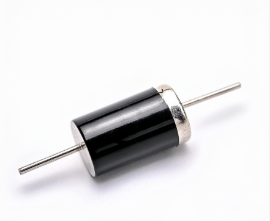
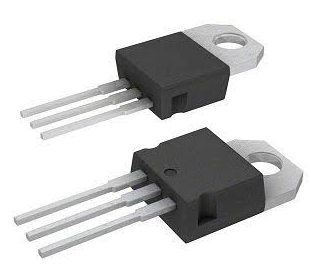

Os diodos são componentes fundamentais da eletrônica moderna.
Sua principal função é controlar o sentido da corrente elétrica.
Eles são utilizados em fontes de alimentação, carregadores,
sistemas de iluminação, sensores e diversos aparelhos eletrônicos.
Diferentes tipos de diodos utilizados em circuitos eletrônicos.
Neste conteúdo, você vai conhecer o funcionamento dos diodos,
suas classificações e sua importância na conversão de corrente
alternada em corrente contínua.
1. O que é um diodo?
O diodo é um componente eletrônico semicondutor que permite
a passagem da corrente elétrica com mais facilidade em um
sentido do que no sentido contrário. Ele pode ser comparado
a uma válvula que controla a direção do fluxo elétrico.
Em um diodo semicondutor comum, a estrutura é formada por
regiões de materiais do tipo P e do tipo N. A união dessas
regiões forma uma junção que determina o comportamento
elétrico do componente.
O diodo possui dois terminais: o ânodo e o
cátodo. Em muitos modelos, uma faixa no corpo
do componente identifica o lado do cátodo.

Exemplo de diodo semicondutor.
Os diodos são importantes porque ajudam a controlar correntes,
proteger circuitos, produzir luz e converter sinais elétricos.
2. Como funciona um diodo?
O funcionamento de um diodo depende da tensão aplicada
entre seus terminais. As duas condições principais são
a polarização direta e a polarização inversa.
2.1 Polarização direta
A polarização direta acontece quando o ânodo é ligado
ao polo positivo da fonte e o cátodo ao polo negativo.
Quando a tensão é suficiente, o diodo conduz corrente.
Em muitos diodos de silício, a queda de tensão direta
costuma ficar próxima de 0,7 V, dependendo da corrente,
da temperatura e do modelo utilizado.
2.2 Polarização inversa
A polarização inversa ocorre quando o ânodo é ligado
ao polo negativo e o cátodo ao polo positivo da fonte.
Nessa condição, o diodo normalmente bloqueia a corrente,
permitindo apenas uma pequena corrente de fuga.
Se a tensão inversa ultrapassar o limite do componente,
ele poderá ser danificado. Alguns modelos, como o Zener,
são projetados para funcionar em uma região específica
de ruptura, respeitando seus limites elétricos.
Por que isso é importante?
Essa propriedade permite que o diodo direcione a corrente
em um circuito. É justamente esse comportamento que torna
possível utilizar diodos na retificação de sinais alternados.
3. Principais tipos de diodos
Existem diversos tipos de diodos. Cada um possui características
próprias e é escolhido de acordo com a função que deverá realizar.
3.1 Diodo retificador
É utilizado principalmente para converter corrente
alternada em corrente contínua pulsante. Aparece em
fontes de alimentação, carregadores e equipamentos eletrônicos.
3.2 LED — Diodo Emissor de Luz
LEDs utilizados para produzir iluminação.
O LED transforma parte da energia elétrica em luz quando
é polarizado corretamente. A cor emitida depende dos
materiais utilizados em sua fabricação.
É encontrado em lâmpadas, telas, painéis, lanternas
e luzes indicadoras de aparelhos eletrônicos.
3.3 Diodo Zener
Exemplo de diodo Zener.
O diodo Zener é projetado para operar em uma região
específica de polarização inversa. Ele pode ser utilizado
para estabilizar ou limitar a tensão em determinados circuitos.
3.4 Fotodiodo
O fotodiodo é sensível à luz. A iluminação altera suas
características elétricas, permitindo que o circuito
detecte sinais luminosos.
É utilizado em sensores ópticos, instrumentos de medição
e sistemas de comunicação.
3.5 Diodo Schottky

Exemplo de diodo Schottky.
O diodo Schottky apresenta uma queda de tensão direta
geralmente menor que a de muitos diodos de silício comuns
e pode apresentar comutação rápida.
É utilizado em fontes de alimentação e circuitos que
precisam reduzir perdas ou trabalhar com mudanças rápidas
de estado.
Créditos das imagens: imagens disponibilizadas no documento
de referência do projeto. Consulte o material original para
registrar a autoria e a fonte completa de cada imagem.
4. Exemplo prático: acender um LED
Um exemplo simples da utilização de um diodo é um circuito
com uma fonte de baixa tensão, um resistor e um LED.
A fonte fornece energia elétrica ao circuito.
O resistor limita a corrente para proteger o LED.
O LED é ligado com a polaridade correta.
Quando a corrente passa pelo LED, ele emite luz.
Se o LED for conectado ao contrário, normalmente não acenderá.
A ligação invertida também pode danificá-lo caso a tensão
inversa ultrapasse o limite especificado pelo fabricante.
O resistor é importante porque a corrente não deve ser
controlada apenas pela resistência interna do LED.
Esse exemplo demonstra como um componente semicondutor
pode transformar energia elétrica em outra forma de energia.
Segurança: para atividades práticas, utilize
uma fonte de baixa tensão adequada e supervisão do professor.
Não faça experimentos diretamente na tomada.
5. O que é retificação?
Retificação é o processo de converter corrente alternada (CA)
em corrente contínua pulsante. Na corrente alternada, o sentido
da corrente muda periodicamente. Na corrente contínua, ela
mantém o mesmo sentido.
Muitos circuitos eletrônicos precisam de corrente contínua
para funcionar. Por isso, os diodos são utilizados em fontes
de alimentação para transformar a energia recebida em uma
forma adequada aos equipamentos.
5.1 Retificação de meia onda
Na retificação de meia onda, um diodo permite a passagem
de um dos semiciclos da tensão alternada e bloqueia o outro.
O resultado é uma saída pulsante que utiliza apenas parte
da onda de entrada.
A principal vantagem é a simplicidade. A desvantagem é
o aproveitamento limitado da forma de onda.
5.2 Retificação de onda completa
A retificação de onda completa aproveita os dois semiciclos
da tensão alternada, fazendo com que a corrente de saída
mantenha o mesmo sentido.
Um circuito comum utiliza quatro diodos conectados em
uma ponte retificadora. Esse método produz pulsos em
ambos os semiciclos e geralmente facilita a filtragem
da tensão de saída.
5.3 Filtragem e estabilização
Após a retificação, a tensão ainda pode variar bastante.
Um capacitor de filtragem ajuda a reduzir essas oscilações.
Em seguida, um regulador pode ser utilizado para manter
a tensão próxima do valor desejado.
Assim, uma fonte de alimentação pode combinar retificação,
filtragem e regulação para fornecer energia adequada
ao circuito eletrônico.
6. Aplicações dos diodos na Eletroeletrônica
Os diodos são utilizados em diversos equipamentos e sistemas.
Entre as principais aplicações estão:
Fontes de alimentação:
conversão de corrente alternada em corrente contínua.
Iluminação:
LEDs em lâmpadas, telas e painéis.
Proteção elétrica:
circuitos que ajudam a limitar tensões ou a evitar
efeitos de polaridade invertida.
Sensores:
fotodiodos que detectam a presença ou a intensidade da luz.
Equipamentos de comunicação:
detecção e processamento de sinais em circuitos específicos.
Eletrônica automotiva:
circuitos de alimentação, iluminação e proteção.
7. Curiosidade: o rádio de galena
O rádio de galena foi um tipo de receptor utilizado no início
da história da radiodifusão. Ele podia receber sinais de rádio
sem precisar de uma fonte elétrica externa para alimentar
o circuito detector.
O aparelho utilizava um cristal de galena e um contato metálico
fino para detectar o sinal recebido. Esse comportamento
contribuiu para o desenvolvimento histórico dos detectores
semicondutores e dos primeiros receptores de rádio.
Essa curiosidade mostra que o controle dos sinais elétricos
por materiais e componentes especiais já era importante
antes da popularização dos equipamentos eletrônicos modernos.
8. Resumo para o caderno
O diodo é um componente semicondutor que conduz corrente
principalmente em um sentido. Seus terminais são chamados
ânodo e cátodo.
Polarização direta:
permite a condução quando a tensão é suficiente.
Polarização inversa:
normalmente bloqueia a corrente.
Diodo retificador:
utilizado para converter CA em corrente contínua pulsante.
LED:
transforma parte da energia elétrica em luz.
Diodo Zener:
pode estabilizar ou limitar tensões em circuitos projetados
para essa finalidade.
Fotodiodo:
detecta luz.
Diodo Schottky:
apresenta características úteis em circuitos rápidos
e de baixa queda de tensão.
Retificação de meia onda:
aproveita um semiciclo da tensão alternada.
Retificação de onda completa:
aproveita os dois semiciclos.
Filtragem:
reduz as oscilações da tensão retificada.
Os diodos são essenciais em fontes de alimentação, iluminação,
sensores e circuitos de proteção.
9. Quiz: teste seus conhecimentos
Responda às questões abaixo para verificar o que você aprendeu.
Ao terminar, clique em “Corrigir respostas”.
10. Referências
Para a elaboração e aprofundamento do conteúdo, consulte
materiais didáticos e fontes técnicas sobre semicondutores,
diodos e circuitos retificadores.
Material de referência do projeto:
Diodos e retificação, documento disponibilizado
para a atividade escolar.
Créditos das imagens: as imagens utilizadas
nesta página estão na pasta
assets/images/. Registre a autoria, o título
e o endereço original de cada imagem conforme o documento
de referência ou a fonte em que foi publicada.